The Assignment
The third assignment for the digital fabrication minor.
We had finally gotten into fabrication this week. Here was the assignment:
* Complete laser cutter introduction and safety training and document the process in a group assignment page. One person from each group will be responsible for creating the group documentation repository/page.
* Add link to your the group documentation page/repository to your individual documentation.
* Design, laser cut a parametric press-fit kit. Please avoid making boxes with finger joints. It is going to be considered below minimum requirements. Material (cardboard, ~3.75mm thick) is provided. Material thickness should be a parameter for on-site adjustment.
* Use the vinyl cutter to cut something. It can be as simple as a sticker for your laptop to multi-color design for your t-shirt.The Idea
I thought of those cool old globes where the pedestal was bulky and wrapped around the entire sphere at its waist. You know, one of these:
I’ve always liked these better than the slim modern globes. There’s just something about them that draws the eye.
But what if the globe could be rotated freely, and what if it was swappable? What if, instead of a map of the Earth, a globe was blank and could just be drawn on? To create a fictional planet for worldbuilding, whether it be for a story or a custom board game. Or just art for the sake of it, in an unusual format.
So the project would be the pedestal for globes. The globes themselves would be created separately. The design I came up with seemed doable for a first laser cutting project.
On the right, the first sketch. On the left, the second.
The legs of it would attach to the rim and to each other at the bottom. I took on the challenge of making six legs instead of four, because I thought it would look nicer that way.
The design could theoretically accomocate spheres of different scales. There would be adjustable supports with smooth ends at the bottom and the edges of the pedestal, which the spheres would rest on. The smaller the sphere, the longer the supports. The sphere would always rest in the center and be able to be rotated smoothly.
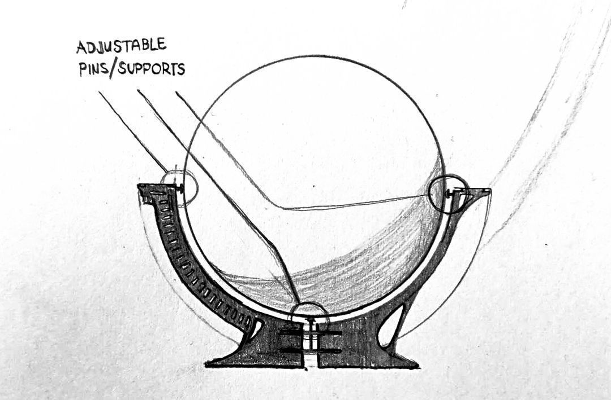The Digital
My first instinct was just going directly into Inkscape and trying to measure out all the different pieces there. Then I remembered an important detail in the assignment:
Material thickness should be a parameter for on-site adjustment.I needed to learn parametric modeling in order to satisfy this requirement. I had no idea how to do this, but luckily found a fitting tutorial for the exact type of connection I needed in my project. I learned its name then, too. Tabs and Slots.
Still using Ondsel for the CAD modeling. It’s just a UX wrapper for FreeCAD, so the same tutorials apply.
The first step, in a new project, was to create a spreadsheet in the spreadsheet workbench to store the variables. I created a cell with
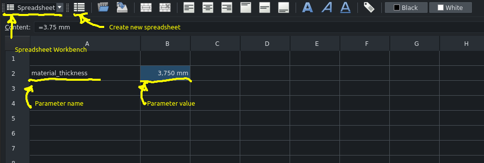To connect the variable cell with the actual value, an alias is needed. This is done by right-clicking the value cell and going into its Properties and simply setting the alias to be the same as the variable name. Also we specify the display unit to be millimeters.
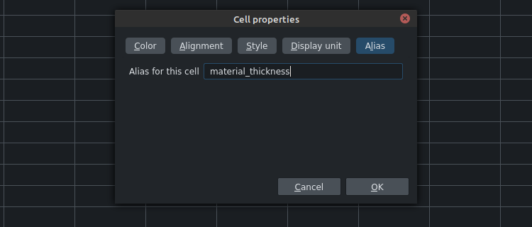 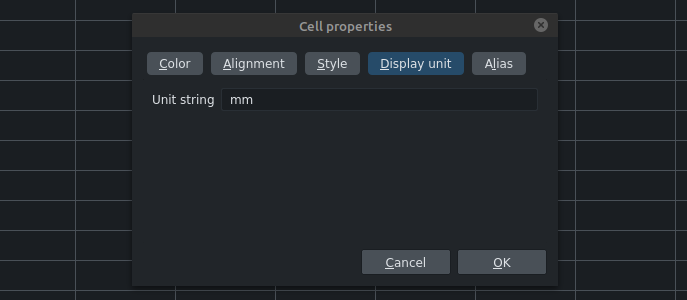Then it was time to create the outline sketches. At this point I did move to Inkscape for a bit to decide on a rough shape for the legs. And more importantly, I had to make sure that the measurements I was thinking of could actually fit on the cardboard sheet that we were to be given.
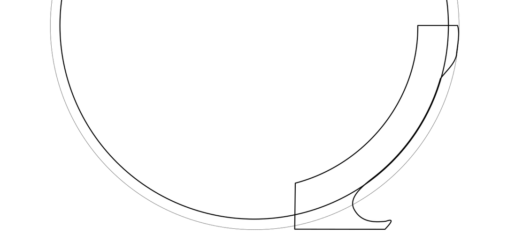The leg doesn’t reach the center because many of them will have to fit around in a circle. Shortening it in that direction would also help with fitting the legs more easily on the flat sheet that I was cutting from. I wanted an outer circumference of 400mm for the rim so I could fit a 300mm circumference sphere at best. The design also requires 12 leg cutouts. It was a lot to fit on a single sheet.
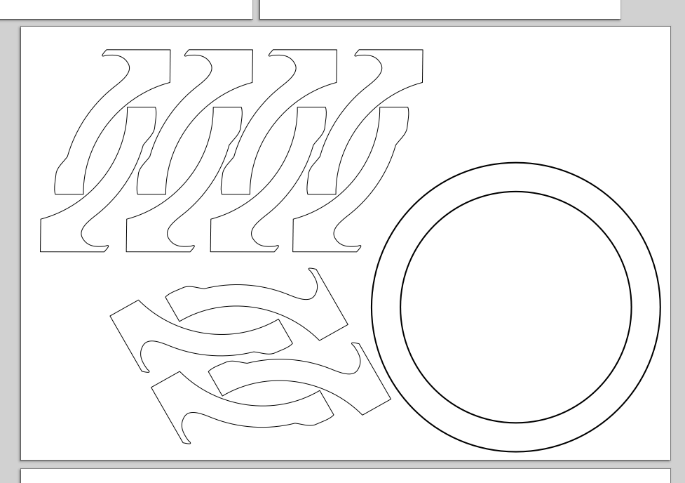I was told the sheet was roughly 600mm by 900mm. Seems to fit quite nicely. The rest of the parts are much smaller, so they should be trivial to fit.
Now I could return to the sketching of the leg.
I created three more variables/aliases with the following values:
- tab_length - 20.0mm
- lap_depth - 20.0mm
- center_radius - 40.0mm
In case they might need to be changed later.
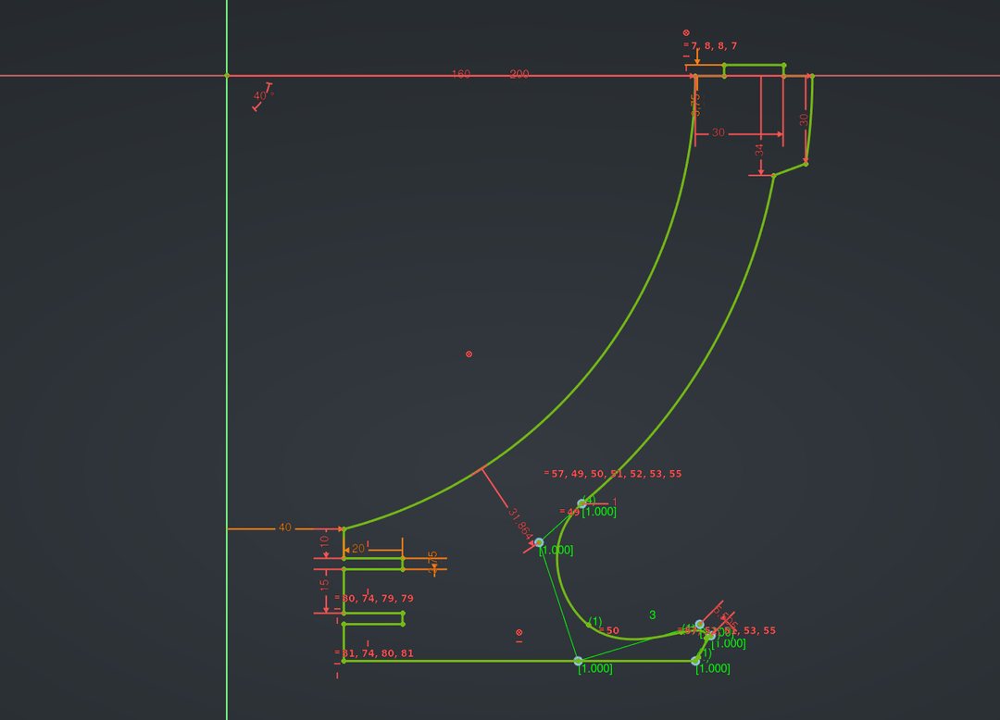This was when the sketching process finally clicked for me. My workflow was as follows:
- Place all the primitives the sketch will consist of such as arcs, lines, polylines and b-splines. They don’t need to be perfect or even connected
- Delete all default constraints! I presumed I needed to have fine control over how the sketch was constrained in order for changes in my variables to nicely update the model. Starting from scratch would allow me that freedom.
- Add the dimension constraints that refer to variables.
- Add the rest of the constraints. There’s an uncountable amount of combinations of constraints that could brind degrees of freedom down to zero. I found this to be a highly enjoyable creative exercise.
When creating a “dimension” constraint you are prompted to enter a length into a text box. There is a button in it that allows you to enter an expression. Referring first to the spreadsheet and then to a variable within allows for the constraint to reference that variable.
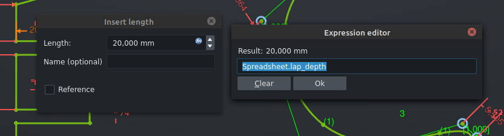Changing a value in the spreadsheet must be followed up with a manual recompute of the sketch, which confused me at first.
I did several things next:
- Added a pad to the leg with the value of material_thickness
- Created a new variable/alias called leg_gap with a value of 10mm
- Set the Attachment Offset on the leg sketch to refer to leg_gap
- Used the Draft Workbench to Mirror the leg to the other side of the plane it was on
- Used the Polar Array Tool in that same workbench on both the leg and its mirror to create 6 copies around the origin
And there we go. Looking pretty good already.
Next were the slots on the top rim. They had to be placed programmatically in the appropriate spots, because adjusting the leg_gap would offset their positions. Luckily again, this is precisely what the second part of the earlier tutorial went into.
I went in to edit the sketch of the rim circle. I created two rectangles over two adjacent tabs.
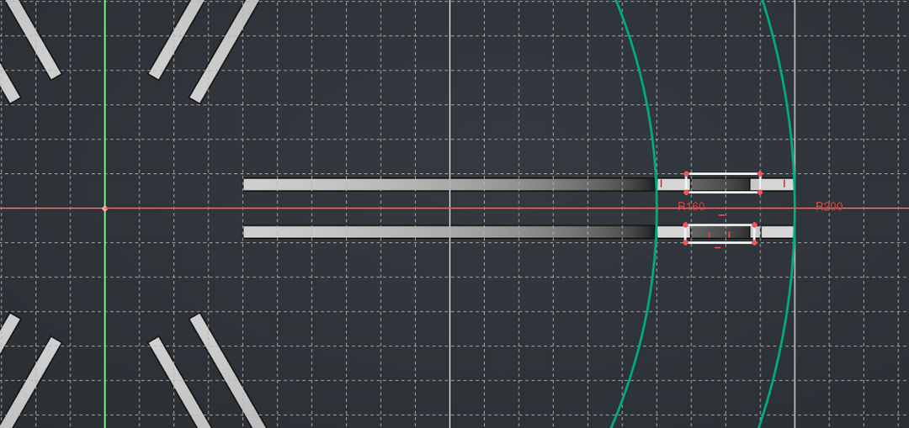I then used the Polar Transform tool to copy the rectangles over to all the other tabs as well. You can see the settings I used in the screenshot below.
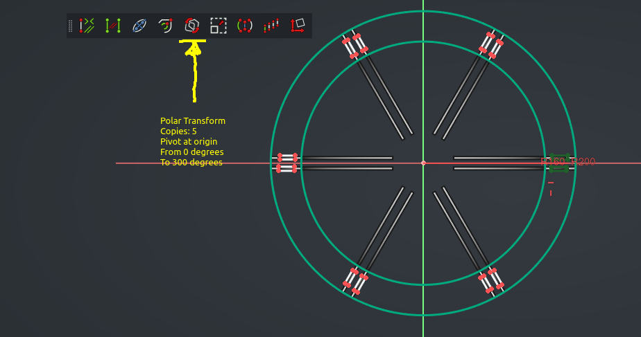I went back out of the sketch and I made sure to select the rim body which the sketch was in from the tree view by double-clicking . I then selected the tops of all the tabs on all the legs and created a Sub-Shape Binder from them. The binder was created inside the rim body because it was the currently active body.
Then I hid all the legs and went back in to the rim’s sketch. I needed to access the binder from the sketch by using the External Reference tool in the Sketcher workbend. This took a few tries to get working. I made sure to have rim body active, and both the sketch and the binder selected so that there was a check-mark next to them in the tree view. Then the missing piece was going to the correct view, because apparently the binder is only visible from one side of the sketch. Finally, with the External Reference tool I selected two opposing edges from each binder rectangle, which made their points selectable in the sketching process. I went through every single pair of points and constrained them to each other.
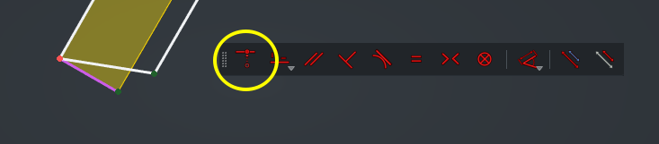Ah, fully constrained.
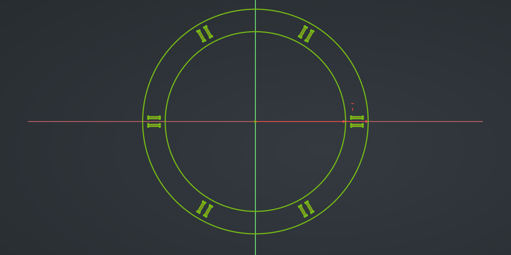While troubleshooting the external references earlier I also came across the Dependency Graph feature in Ondsel. While it didn’t help me this time, it seemed like a very useful tool to get a more detailed overview of the structure of everything. It is found in the Tools-menu.
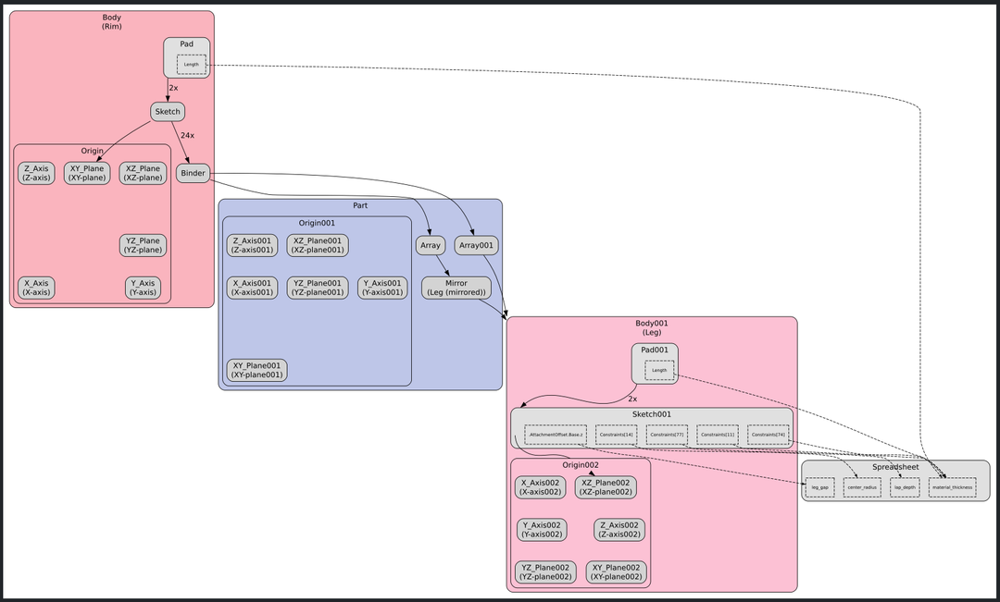The two circles connecting the legs together were next. I created a new body for the bottom one, and with it active, created a datum plane from the bottom side of one of the bottom laps. I made a sketch with just a circle in it, and I set the circle’s radius to be circle_radius + lap_depth * 2. Referring to two of the variables in my spreadsheet. Then again a padding with material_thickness.
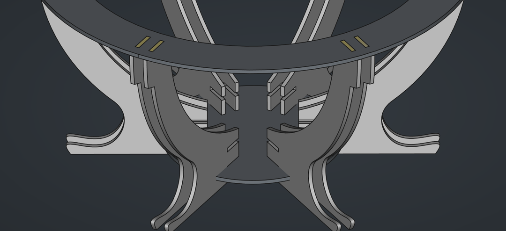.
Using the same workflow as before to cut out the laps in the circle seemed tedious to me. I wanted to see if I could use boolean operations to directly cut out the correct holes with the legs.
In the Part workbench, there are boolean operations available. With the one of the Arrays and the circle selected (and the datum plane deleted because it was causing issues for some reason), it kind of worked…
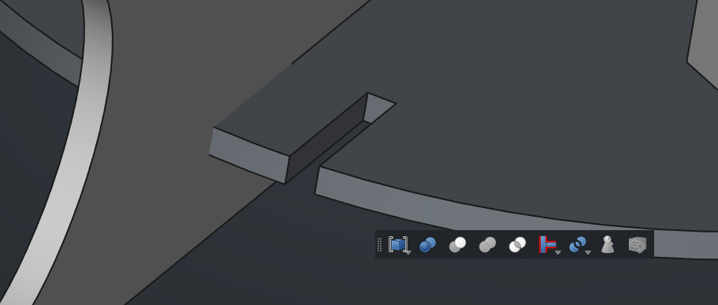The legs disappeared.
I did it for the second array as well.
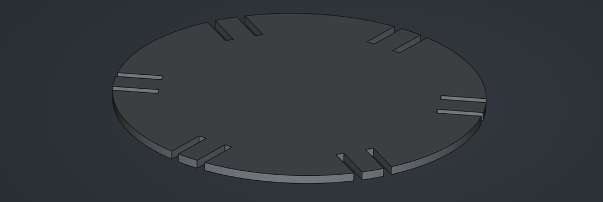Perfect. But where did the legs go?
Turns out they were only hidden. Selecting them in the tree view and hitting space brought them back again.
For the second circle plane, I went into the Draft Workbench and used Clone, the tool with the silliest looking icon in the whole program. Offset the position on the Z-axis with material_thickness + plane_gap, the latter being a new variable I created to constrain the edge between the two circles in the leg sketch. I went back to it to set the constraint.
Cool.
If you remember, the plan was to have adjustable supports coming inward from the tops of all the legs. At this point I still wasn’t sure what they were going to look like and how they were going to be attached, but I trusted that if there was a bit of a supporting structure around the spots where they were going to be attached, there would be a way. So why not duplicate the rim and use the same boolean workflow with laps to attach it to the legs, just a bit below the top rim?